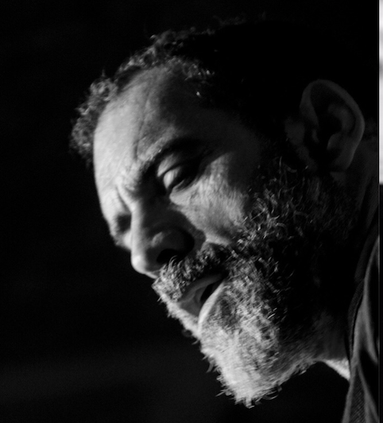
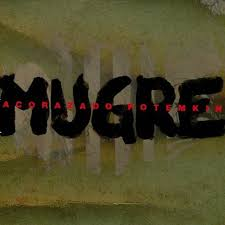
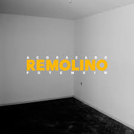
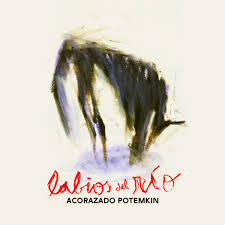

Juan Pablo Fernandez
Cantante y guitarrista de la mítica Pequeña Orquesta Reincidentes, rara avis de la música rioplatense, que tradujo primero la influencia de Nick Cave, y luego se nutrió de los sonidos que hallaron en los puertos para redondear una propuesta inigualable de intensa originalidad.

Federico Ghazarossian
Contrabajista en Me Darás Mil Hijos, su historial comienza en los sótanos porteños, con Don Cornelio y la Zona, banda de post punk guerrillero, y siguió en Los Visitantes, el grupo que anticipó la alterlatinidad con sello propio.
Luciano Esain
Eximnio baterista de Plaimobyl y Valle de Muñecas, siempre fue de pegarle muy duro a los parches, aportando coros y texturas de voz.
ACORAZADO POTEMKIN es un trío de rock argentino integrado por Juan Pablo Fernández, cantante y guitarrista proveniente de Pequeña Orquesta Reincidentes; Luciano Esain, baterista que también forma parte de Valle de Muñecas y Motorama tras pasar por proyectos como Flopa-Manza-Minimal y Plaimobyl; Federico Ghazarossian, bajista que participó de bandas como Don Cornelio y la zona, Los Visitantes y Me darás mil hijos.
La banda nació en 2009 y tiene editados tres discos de estudio: -Mugre (2011), con cortes como “La Mitad” (reversionado luego en tango por el grupo “34 Puñaladas”). -Remolino (2014), del cual se destacan “A lo mejor” –cuyo video fue dirigido por la prestigiosa fotógrafa argentina Nora Lezano-, “Cerca del sol” y “El pan del facho”. -Labios del río (2017), presentado en las ciudades de Buenos Aires, La Plata, Córdoba, Mendoza, Rosario y Montevideo.
Discografía
| Año | Album | Tapa | Canciones |
|---|---|---|---|
| 2011 | Mugre |  |
|
| 2014 | Remolino |  |
|
| 2017 | Labios del Río |  |
|